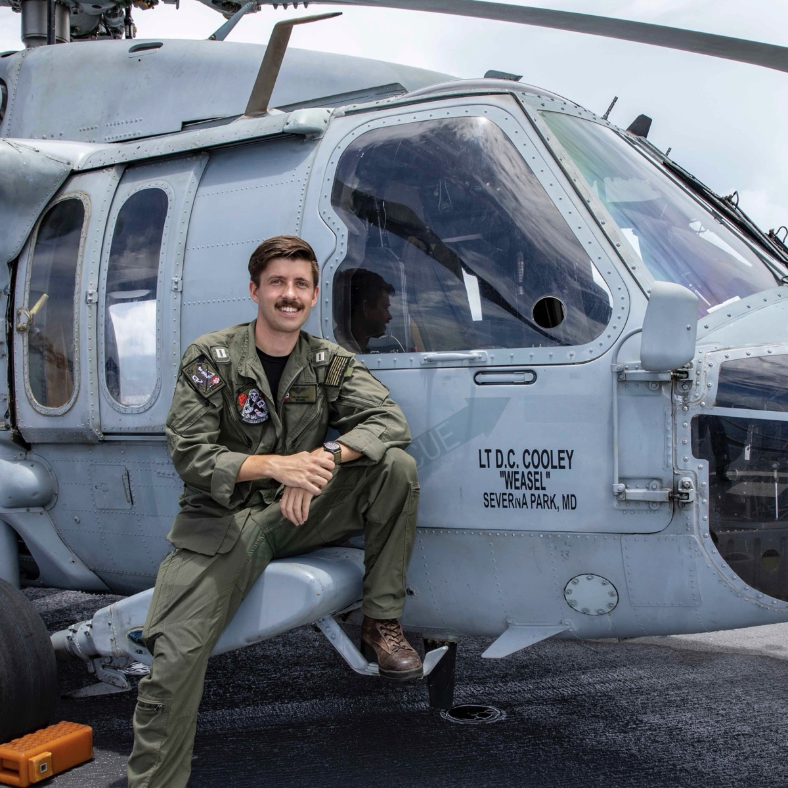

Dillon Cooley
Hi, I’m Dillon Cooley. I’m a Navy helicopter pilot with a background in aerospace engineering and a passion for aviation, technology, and national security. I currently serve as a Weapons and Tactics Instructor, specializing in maritime ISR, with operational experience across a range of platforms and mission sets. I’m interested in international geopolitics and the evolving landscape of military tactics and strategy, especially how emerging technologies shape modern conflict. Outside of work, I enjoy distance running, snowboarding, and exploring San Diego.
Academic Research
Countering A2/AD Through EABO, The Role and Feasibility of Distributed ISR in the Indo-Pacific
